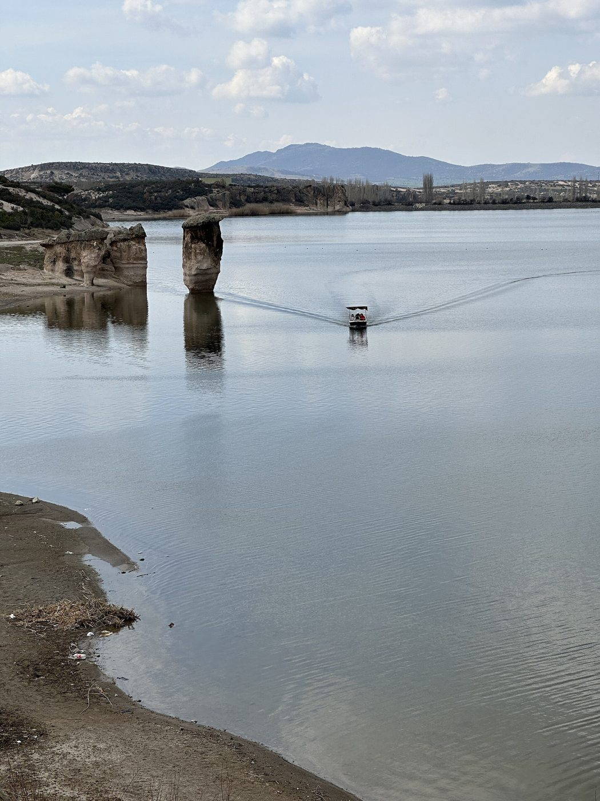
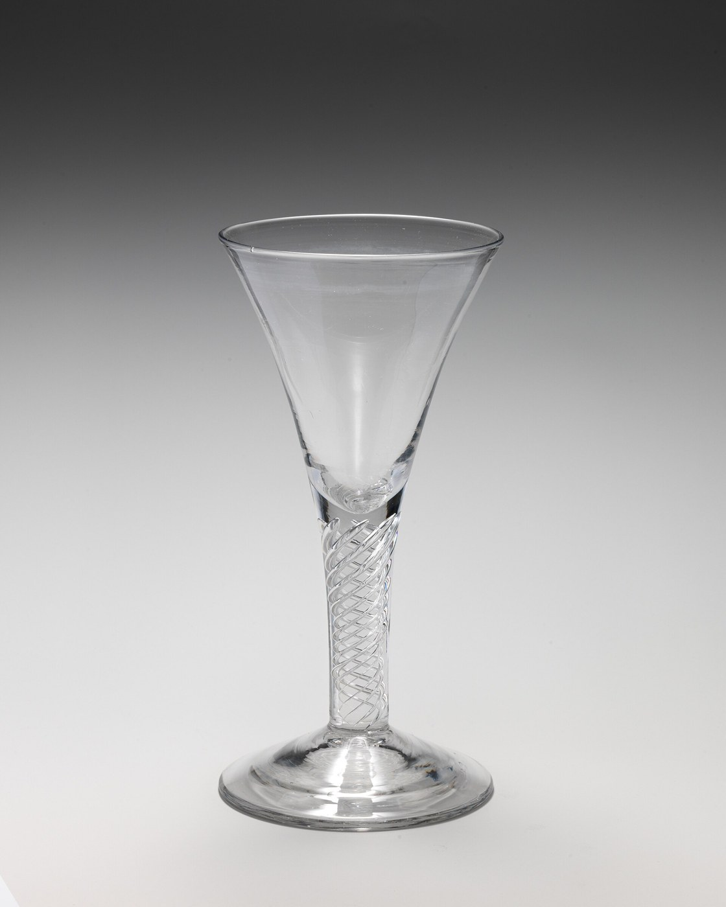
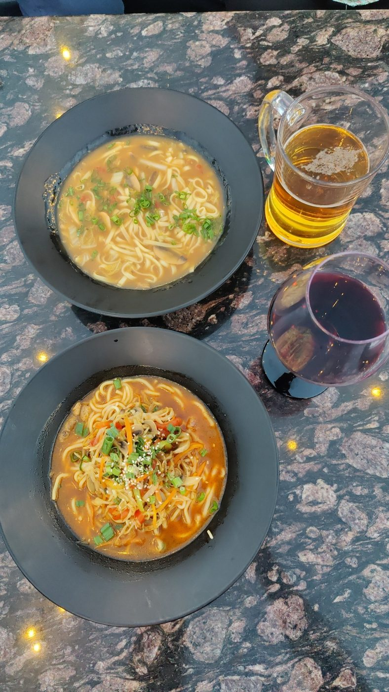
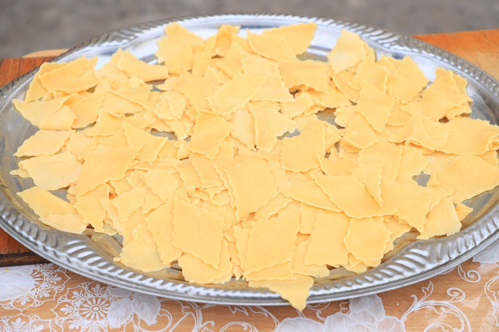
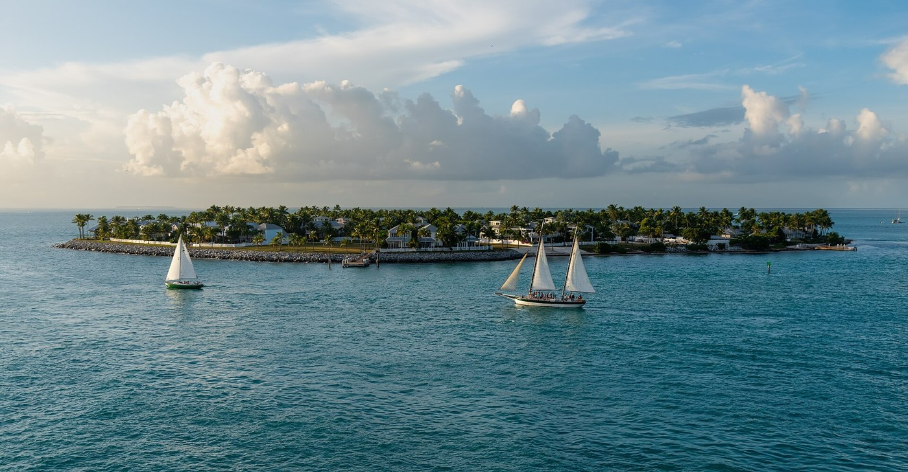
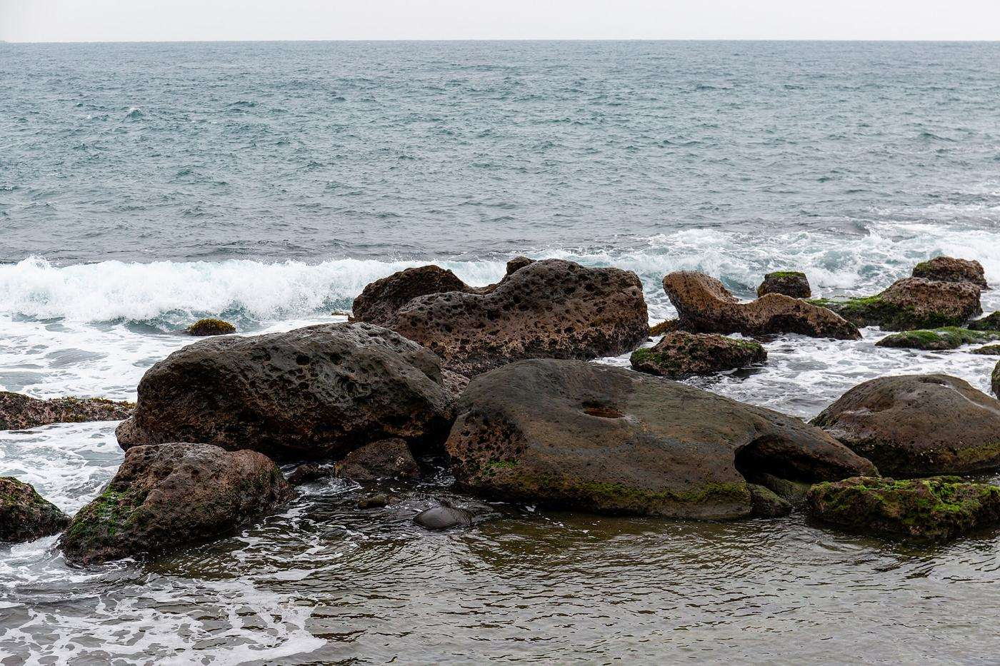

ABOUT
お店の由来と想い
HASHIGOYA(はしごや)は、天橋立傘松公園へ向かうケーブルカー・リフト乗り場のすぐ下、宮津市大垣にあるお店です。以前「えとせとら松屋」があった場所を引き継ぎ、2024年10月にオープンしました。
運営は、丹後の空き家・空き店舗の活用に取り組む株式会社京都丹後企画。公表されている言葉では、名前には「丹後の魅力を訪れた人に伝え、丹後から各地へ人を送り出したい」という思いが込められているとされています。2025年7月のリニューアルでは「A Craft Journey ~丹後でクラフトを“はしご”する旅~」を掲げ、「丹後を感じる体験の入り口」を目指すと発表されました。
出典: 京都府ホームページ(令和6年度起業支援事業費補助金)、2025年7月のリニューアルのプレスリリース。

- クラフトビール
- 地元食材のごはん
- 丹後のおみやげ
MENU
飲んで、食べて、持ち帰る
公表されている内容の紹介です。価格・提供の有無は変わることがあり、詳細は準備中です。写真はイメージです。
クラフトビール
タップで提供されるクラフトビールと、丹後の地酒。立ち飲みもできるお土産店として始まりました。
価格 準備中
地元食材のごはん
地元食材を使ったおでんや、リニューアル時には天ぷら・天丼・天ぷらうどんなどが紹介されました。
価格 準備中
スムージー・焼き菓子
リニューアル時の発表では、スムージーやチャンククッキーも挙げられています。
価格 準備中
丹後のおみやげ
丹後の事業者がつくったおみやげやお菓子、缶詰などのコーナー。
価格 準備中






VOICE
口コミ(イメージ例)
以下は制作側が作成したイメージ例で、実在のお客様の声ではありません。
ケーブルカーに乗る前に立ち寄って、まず一杯。旅のはじまりにちょうどいい場所でした。
おみやげを選びながらお店の方に丹後の話を聞けて、次に行きたい場所が増えました。
景色を眺めたあとの休憩にぴったり。ひと息つけて、また歩きたくなりました。


ACCESS
アクセス・ご案内
| 所在地 | 〒629-2242 京都府宮津市大垣11 |
|---|---|
| 電話 | 準備中 |
| 営業時間 | 準備中 |
| 定休日 | 準備中 |
| SNS | Instagram @hashigoya_amanohashidate |

